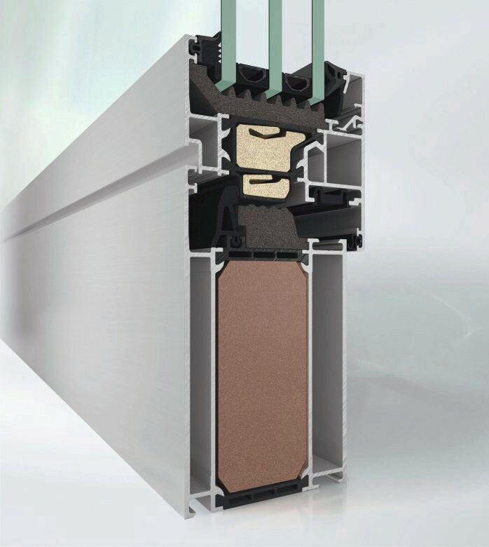
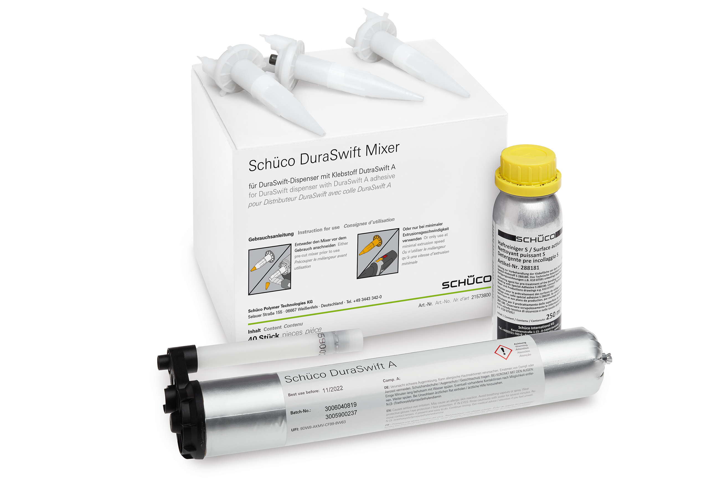
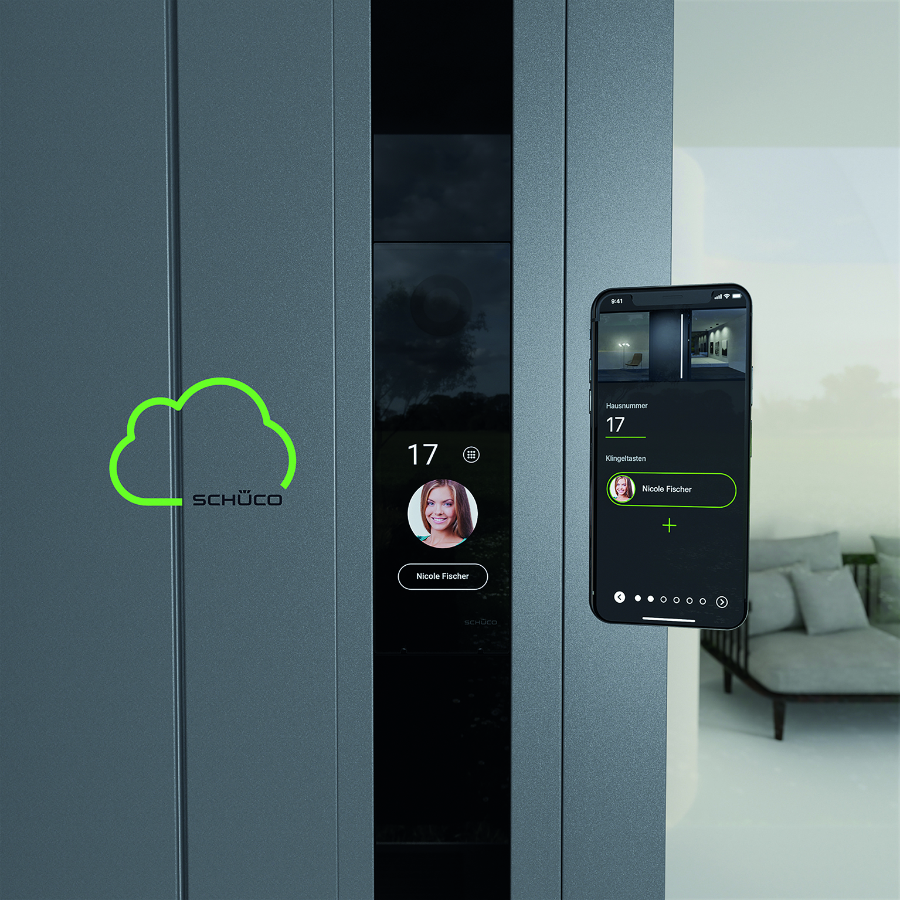

Schüco AWS 75.SI+ optimized mit 75 mm Bautiefe ab 178 mm Ansichtsbreite: Passivhaus zertifizierte Wärmedämmung mit Uf = 0,79 W/(m2K).

Die Fassaden-Systemplattform UDC (Unitized Dynamic Construction), mit der in Elementbauweise individuelle Objekte bei hoher Gestaltungsfreiheit verwirklicht werden können, enthält ein Silber- und zwei Bronze-zertifizierte C2C-Systeme.

Das Klebstoffsortiment Schüco DuraSwift ist für alle Schüco Kunststoff-Fensterprofile geprüft und zertifiziert.

Das DCS SmartTouch System besteht aus dem SmartTouch Modul, der eigenen Schüco App und der Schüco Cloud.